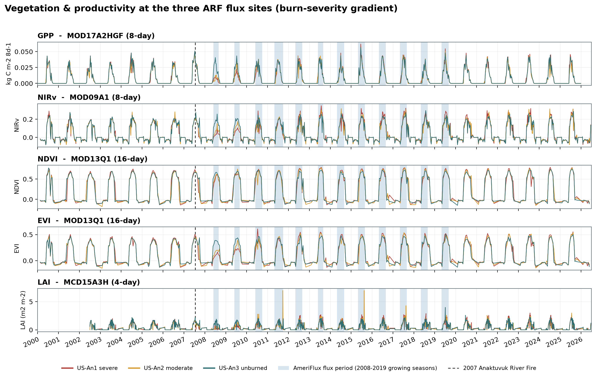
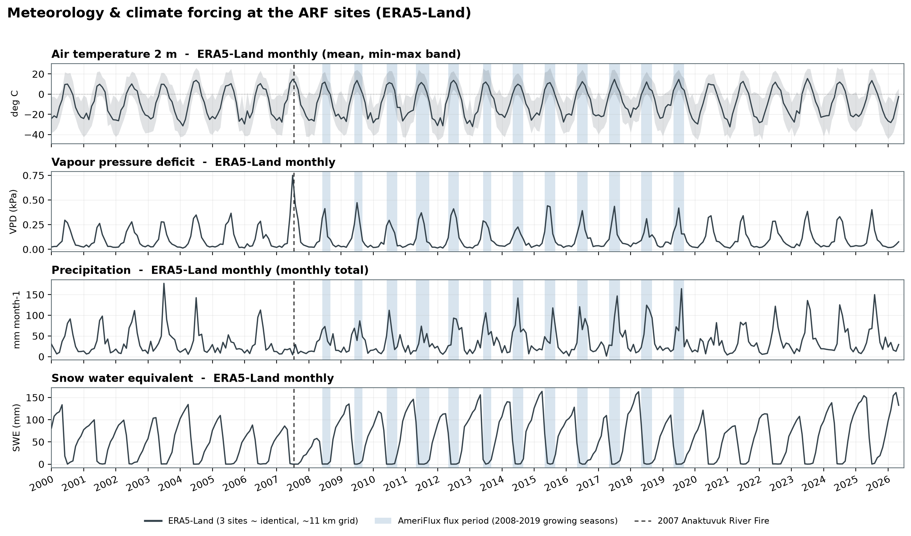
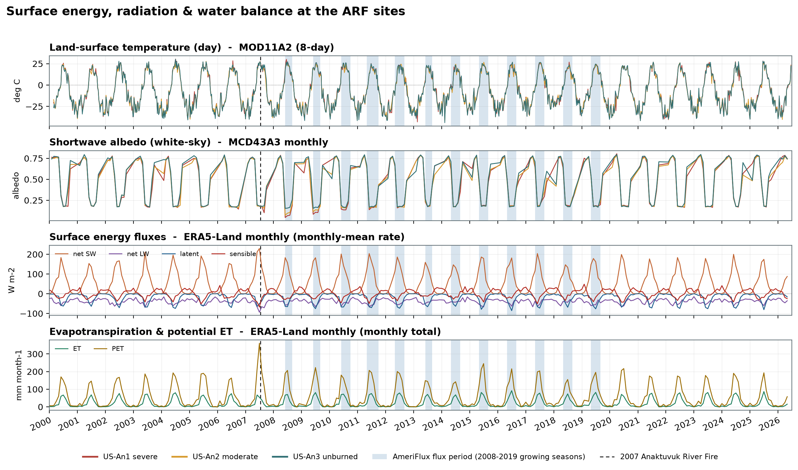
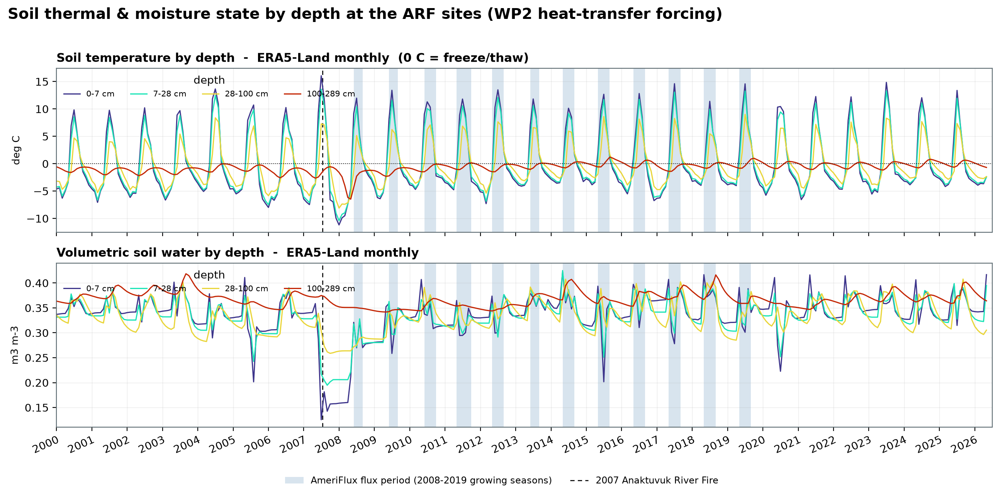
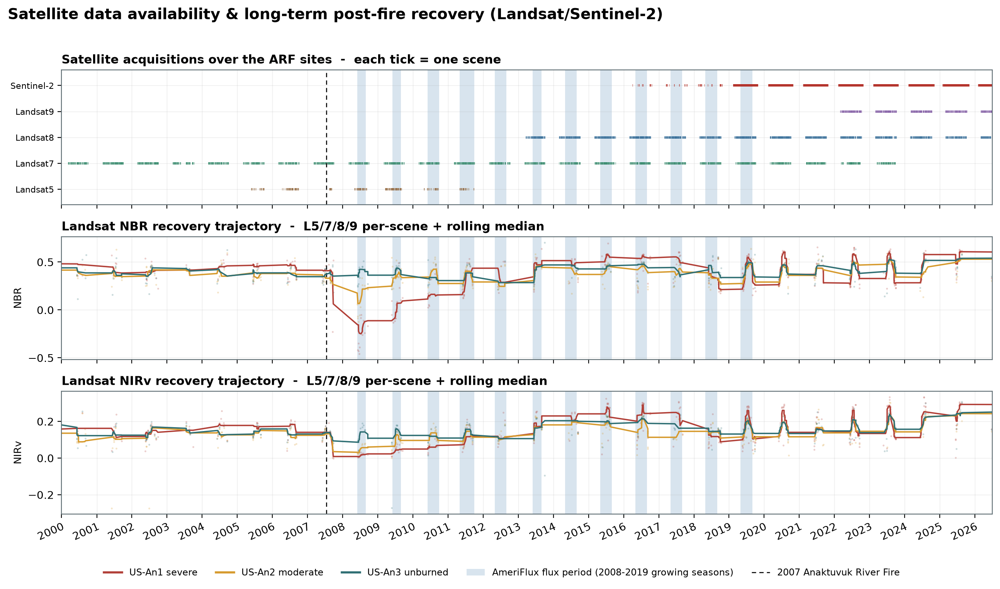
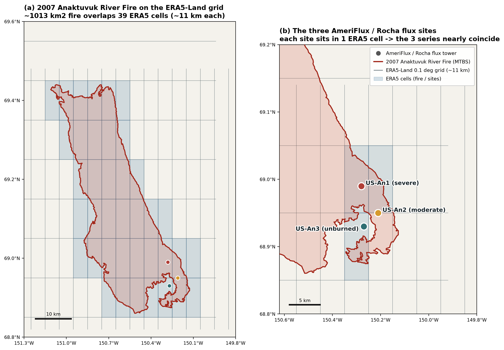

Section 1
In-situ field experiments, grouped by lead collaborator (data holder)
Every lane below is a ground, hand-held, tower or foot/helicopter-access measurement campaign at the Anaktuvuk River Fire (ARF) — no satellite imagery or satellite-derived index is charted. Light lanes = long-term background monitoring; solid lanes = the intensive field campaign. Two isolated visit years are drawn as two separate short ticks, not one connecting bar. The ruler stays fixed while you scroll.
Section 2
Public / archived data products — grouped by where they sit
Reusable, downloadable packages of ARF field measurements, sorted into groups (towers → permafrost → transects → regional). Each product shows the variables it carries, its temporal resolution and location, and a coverage bar with dates. Off-topic records (small-mammal / herbivory) and non-Anaktuvuk-only products are excluded.
Section 3
What we can actually pull, by data type
A many-to-many crosswalk: each data type is served by one or more sources of record, and each source carries several variables. Where a PI campaign (Section 1) is also archived publicly (Section 2), they are merged and the public product is quoted. ARF-direct = measured inside the scar; regional = Alaska/ABoVE product to be filtered to ARF. The Feeds column names what each source supports (energy, vegetation, …) instead of a WP number.
| Data type | Source of record (public first) | Variables | Feeds | Temporal · resolution | Location | Scale | Access |
|---|
Sources
Numbered sources
The light-grey number by each source points here — same number = same source. Data products [1–12] were each checked live against its landing page (✓ verified). Papers [13–28] are the Section-1 citations (held in our Redis library); each notes where its data is archived (→ [n]).
Data products [1–12]
- 1 AmeriFlux ARF towers — US-An1 severe / US-An2 moderate / US-An3 unburned. ameriflux.lbl.gov. ✓ site names confirmed; towers listed 2008–Present (CC-BY, free registration); latest years direct from Rocha.
- 2 Arctic Data Center A2251FM9P (Jones et al.) — repeat LiDAR + ground temperature + boreholes. doi 10.18739/A2251FM9P. ✓ files, CC0, 2009–2023 confirmed.
- 3 ORNL DAAC 2119 — ABoVE post-fire & unburned BLM field sites. doi 10.3334/ORNLDAAC/2119. ✓ 26 transects, 2008–2017, cover/density/thaw/soil confirmed (no dNBR variable).
- 4 EDI — ARF thaw-depth (Rocha & Shaver). knb-lter-arc.10123.6. ✓ 2008-06 → 2014-09, 3 towers, ~70 pts/site.
- 5 EDI — ARF eddy-flux, per site/year. knb-lter-arc.10345–10348 + 20115 (unburned 2013–19). ✓ ½-hourly NEE + energy.
- 6 EDI — Mack carbon/nitrogen-loss (series 10124–10127); best single knb-lter-arc.10126.5. ✓ organic-layer, C:N, combusted C, dNBR.
- 7 EDI — Bret-Harte biomass & soil N (series knb-lter-arc.10198–10204). ✓ above + root biomass, C:N, 2011, 6 transects.
- 8 EDI — N×P fertilization LAI knb-lter-arc.20108.2 (+ point-frame 20106.2, canopy 20137.1). ✓ 2016–2019.
- 9 ORNL DAAC 1903 — "Soil Moisture & ALT in Alaska and NWT, 2008–2020". doi …/1903. ✓ regional — filter to ARF coords.
- 10 ORNL DAAC 2177 — SATFiD "…Alaska Tundra Sites, 1972–2020", 37 datasets. doi …/2177. ✓ ALT / soil / PFT cover / fire history (no LAI or biomass); isolate ARF rows via dataset-ID.
- 11 TRY plant-trait database — global, request-based. try-db.org. ✓ SLA / height / rooting depth are standard; leaf-toughness is not a TRY trait — request Fetcher (2021) data from authors.
- 12 Umiat USGS station (AK104) — snow depth / soil moisture, hourly. USGS DS 1021. ✓ 1998–2015 (not 2004→present); hourly file direct-download.
Papers [13–28] — Section 1 citations; → [n] = where the data is archived
- 13 Adrian V. Rocha, Gaius R. Shaver (2011). Burn severity influences postfire CO2 exchange in arctic tundra. Ecological Applications. → data [1][5] doi 10.1890/10-1367.1
- 14 Adrian V. Rocha, Gaius R. Shaver (2011). Postfire energy exchange in arctic tundra: the importance and climatic implications of burn severity. Global Change Biology. → data [1] doi 10.1111/j.1365-2486.2011.02441.x
- 15 Adrian V. Rocha, Gaius R. Shaver (2009). Advantages of a two band EVI calculated from solar and photosynthetically active radiation fluxes. Agricultural and Forest Meteorology. → data [1] doi 10.1016/j.agrformet.2009.03.016
- 16 Yueyang Jiang, Adrian V. Rocha, … Gaius R. Shaver, Qianlai Zhuang (2015). Contrasting soil thermal responses to fire in Alaskan tundra and boreal forest. JGR Earth Surface. → data [4] doi 10.1002/2014jf003180
- 17 Benjamin M. Jones, Guido Grosse, Christopher D. Arp, … Lin Liu, Daniel J. Hayes, Christopher F. Larsen (2015). Recent Arctic tundra fire initiates widespread thermokarst development. Scientific Reports. → data [2] (repeat LiDAR) doi 10.1038/srep15865
- 18 Benjamin M. Jones, Mikhail Z. Kanevskiy, Yuri Shur, … Alexandra Veremeeva, Eric A. Miller, Randi Jandt (2024). Post-fire stabilization of thaw-affected permafrost terrain in northern Alaska. Scientific Reports. → data [2] doi 10.1038/s41598-024-58998-5
- 19 Benjamin M. Jones, Crystal A. Kolden, Randi Jandt, John T. Abatzoglou, Frank Urban, Christopher D. Arp (2009). Fire Behavior, Weather, and Burn Severity of the 2007 Anaktuvuk River Tundra Fire, North Slope, Alaska. Arctic, Antarctic, and Alpine Research. → data [12] (Umiat); CBI in-paper only doi 10.1657/1938-4246-41.3.309
- 20 Natalie T. Boelman, Adrian V. Rocha, Gaius R. Shaver (2011). Understanding burn severity sensing in Arctic tundra: exploring vegetation indices, suboptimal assessment timing and the impact of increasing pixel size. International Journal of Remote Sensing. → no public dataset located doi 10.1080/01431161.2011.611187
- 21 Michelle C. Mack, M. Syndonia Bret-Harte, Teresa N. Hollingsworth, … Edward A. G. Schuur, Gaius R. Shaver, David L. Verbyla (2011). Carbon loss from an unprecedented Arctic tundra wildfire. Nature. → data [6] doi 10.1038/nature10283
- 22 M. Syndonia Bret-Harte, Michelle C. Mack, Gaius R. Shaver, … Camilo A. Mojica, Camila Pizano, Julia A. Reiskind (2013). The response of Arctic vegetation and soils following an unusually severe tundra fire. Philosophical Transactions of the Royal Society B. → data [7] doi 10.1098/rstb.2012.0490
- 23 Ian Klupar, Adrian V. Rocha, Edward B. Rastetter (2021). Alleviation of nutrient co-limitation induces regime shifts in post-fire community composition and productivity in Arctic tundra. Global Change Biology. → data [8] doi 10.1111/gcb.15646
- 24 Rocha (2021). LAI, point-frame, canopy-height and tussock-structure raw data for ARF fertilization plots. NSF PAR dataset / EDI. → data [8]
- 25 Sarah De Baets, Martine J. van de Weg, Rob Lewis, … Timothy A. Quine, Gaius R. Shaver, Iain P. Hartley (2016). Investigating the controls on soil organic matter decomposition in tussock tundra soil and permafrost after fire. Soil Biology and Biochemistry. → no public dataset located doi 10.1016/j.soilbio.2016.04.020
- 26 Rebecca E. Hewitt, Elizabeth Bent, Teresa N. Hollingsworth, F. Stuart Chapin, D. Lee Taylor (2013). Resilience of Arctic mycorrhizal fungal communities after wildfire facilitated by resprouting shrubs. Ecoscience. → GenBank ITS (KC455311–KC455362) doi 10.2980/20-3-3620
- 27 Rebecca E. Hewitt, Teresa N. Hollingsworth, F. Stuart Chapin III, D. Lee Taylor (2016). Fire-severity effects on plant-fungal interactions after a novel tundra wildfire disturbance: implications for arctic shrub and tree migration. BMC Ecology. → no standalone package doi 10.1186/s12898-016-0075-y
- 28 Rebecca E. Hewitt, F. Stuart Chapin, Teresa N. Hollingsworth, Michelle C. Mack, Adrian V. Rocha, D. Lee Taylor (2020). Limited overall impacts of ectomycorrhizal inoculation on recruitment of boreal trees into Arctic tundra following wildfire belie species-specific responses. PLoS ONE. → EDI / Bonanza Creek LTER (BNZ:738, 740) doi 10.1371/journal.pone.0235932
Section 4
GEE satellite & reanalysis time series at the three flux sites
Multi-year Google Earth Engine series extracted at the three AmeriFlux / Rocha towers (US-An1 severe · US-An2 moderate · US-An3 unburned), with the AmeriFlux growing-season flux windows shaded so the remote-sensing and reanalysis curves line up with when the towers actually measured. These complement the in-situ inventory above with continuous, downloadable spatial context (GPP, NIRv, VPD, soil temperature, energy balance, recovery trajectories).
- US-An1 / An2 / An3 = the value of the single GEE pixel over each tower through time (
image.sampleRegions, no spatial averaging). MODIS/Landsat (250 m–1 km) resolve the three towers → three coloured lines; ERA5-Land (~11 km) can't → drawn as one dark line (the towers share the same cells, see Fig F). - Blue bands = "growing season": the snow-free months each year (≈ May/Jun–Aug/Sep) when the eddy-covariance towers actually record fluxes; the public AmeriFlux BASE record spans 2008–2019. Compare the curves inside the bands when relating to the tower fluxes.
- x-axis ticks every year (rotated 24°), 2000–2026; VPD from ERA5 2 m temperature & dew point (Tetens); energy
_sumJ m⁻² → W m⁻². - Underlying 20 CSVs and the full method write-up live in
gee_csv/(WP1_GEE_figures_and_methods.md); exports also in Google DriveARF_ARTECO_WP1_GEE.





